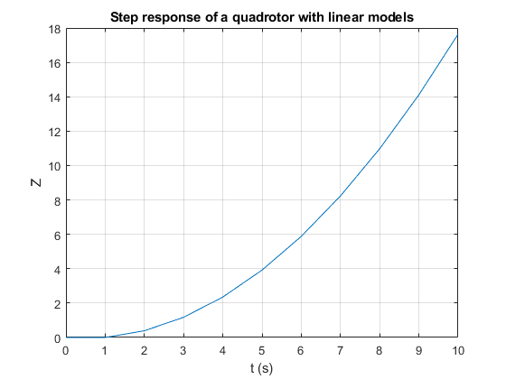
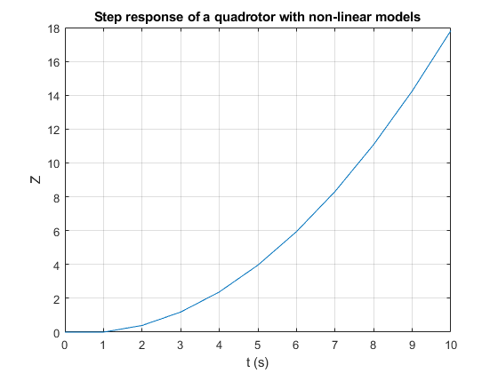

Laboratory - Introduction to Control - 2022/2023
Authors:
Lucas Gonçalves, nº 99519
Alexandre Rocha, nº 95767
Abhishek Arvindbhai, nº 99722
Date:
19/12/2022
Contents
Linearization
close all;
clear;
clc;
simul_t = 10;
M = 1;
G = 9.8;
Kt = 3.575*10^(-5);
Z_0 = 2;
Omega_0 = sqrt((G*M)/Kt);
U_0 = Omega_0;
Plots
input = [100 1000 5000];
input = input *2 * pi /60;
f1= figure(1);
hold on;
warning('off','all');
warning;
for i=1:size(input)
du= input(i);
sim('Model_lab2.slx');
plot(ans.Z_Linear.time,ans.Z_Linear.signals.values);
end
xlabel('t (s)');
ylabel('Z');
grid on;
box on;
title('Step response of a quadrotor with linear models');
f2= figure(2);
hold on;
for i=1:size(input)
du= input(i);
sim('Model_lab2.slx');
plot (ans.Z_nLinear.time, ans.Z_nLinear.signals.values);
end
xlabel('t (s)');
ylabel('Z');
grid on;
box on;
title('Step response of a quadrotor with non-linear models');
All warnings have the state 'off'.
Found algebraic loop containing:
<a href="matlab:open_and_hilite_hyperlink ('Model_lab2/Actuator/Derivative','error')">Model_lab2/Actuator/Derivative</a>
<a href="matlab:open_and_hilite_hyperlink ('Model_lab2/Actuator/Gain1','error')">Model_lab2/Actuator/Gain1</a>
<a href="matlab:open_and_hilite_hyperlink ('Model_lab2/Actuator/Sum2','error')">Model_lab2/Actuator/Sum2</a> (algebraic variable)
Found algebraic loop containing:
<a href="matlab:open_and_hilite_hyperlink ('Model_lab2/Actuator/Derivative','error')">Model_lab2/Actuator/Derivative</a>
<a href="matlab:open_and_hilite_hyperlink ('Model_lab2/Actuator/Gain1','error')">Model_lab2/Actuator/Gain1</a>
<a href="matlab:open_and_hilite_hyperlink ('Model_lab2/Actuator/Sum2','error')">Model_lab2/Actuator/Sum2</a> (algebraic variable)
 